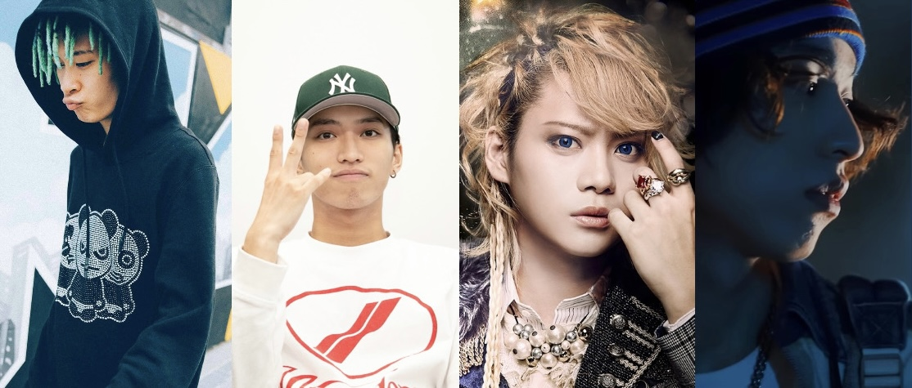
私の好きな歌手たち
佐藤流司
" 步けなくなっても 立てるさ もう一度 自分の手で "
— アイリス
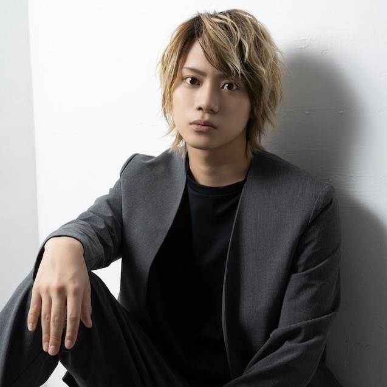
Sato Ryuji (Singer/Actor)
- 音樂類型: V系 (The Brow Beat) / 流行 (ZIPANG OPERA)
- 生日: 1995年 1月 17日
- 年齡: 29
- 出生地: 宮城縣
- Instragram: @ryuji_japan
從小就夢想進入演藝圈，於是在父母的鼓勵下參加向日葵劇團。 首次亮相於《假面騎士Fourze》，此後參演了許多「2.5次元音樂劇」類型的舞台作品，其中以《音樂劇刀劍亂舞》的「加州清光」一角最廣為人知。 2018年1月1日用藝名「Ryuji」和HAKUEI組成視覺系樂團「The Brow Beat」，同時發行第1張專輯《Ragnarök》，且在同年1月17日於仙台開始第1場巡演。 2021年4月和同為2.5次元演員的Spi、福澤侑與歌手心之介組成音樂團體「ZIPANG OPERA」，因為想讓每首歌都像歌劇一樣表演，故以此命名，並於同年的8月22日發行第1張專輯《ZERO》。
入坑曲
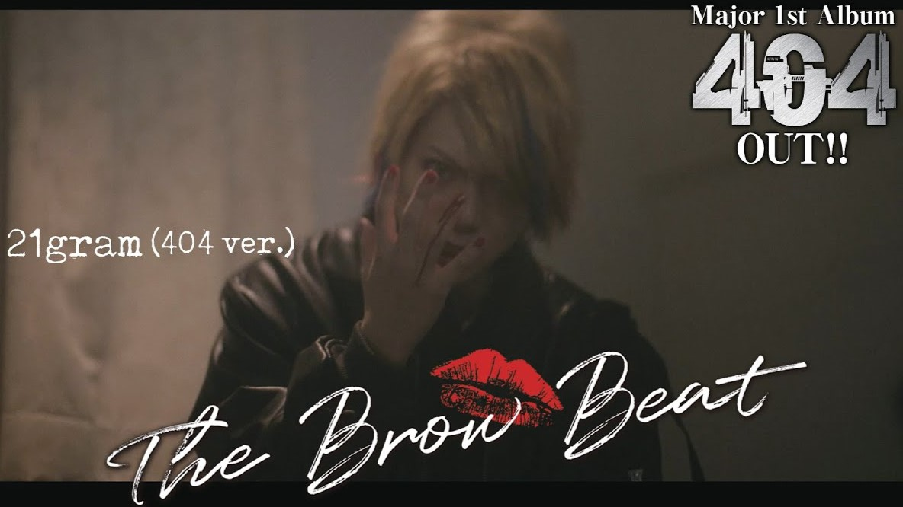
The Brow Beat — 21グラム
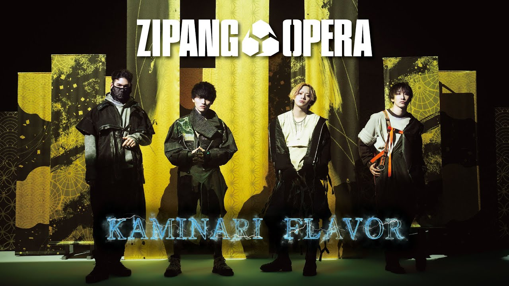
ZIPANG OPERA — KAMINARI FLAVOR
推薦的歌
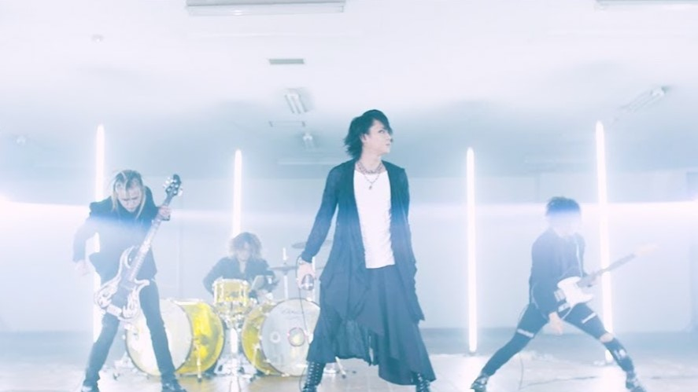
The Brow Beat — アイリス
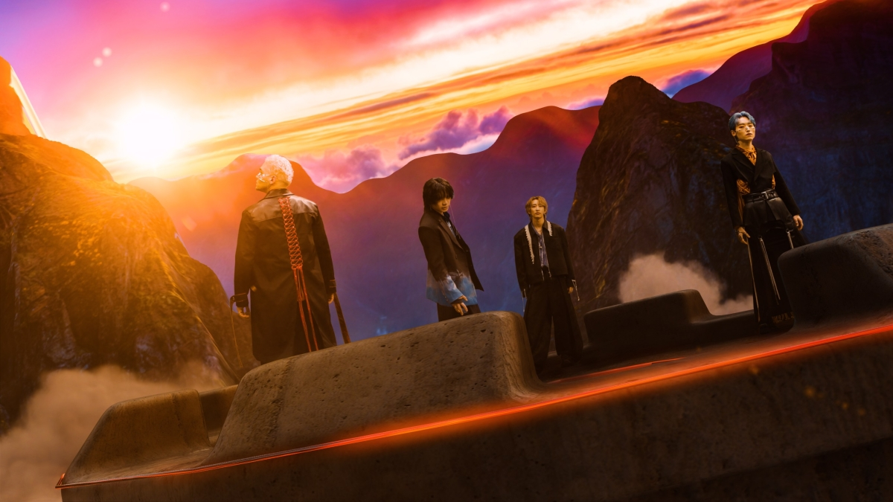
ZIPANG OPERA — KAMIYAGURA
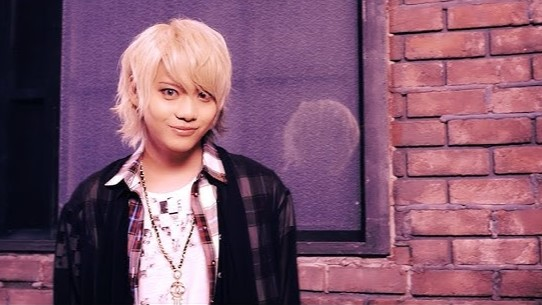
The Brow Beat — 睡蓮
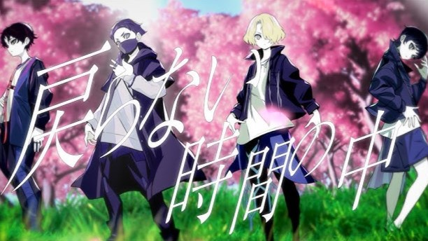
ZIPANG OPERA — Get Over
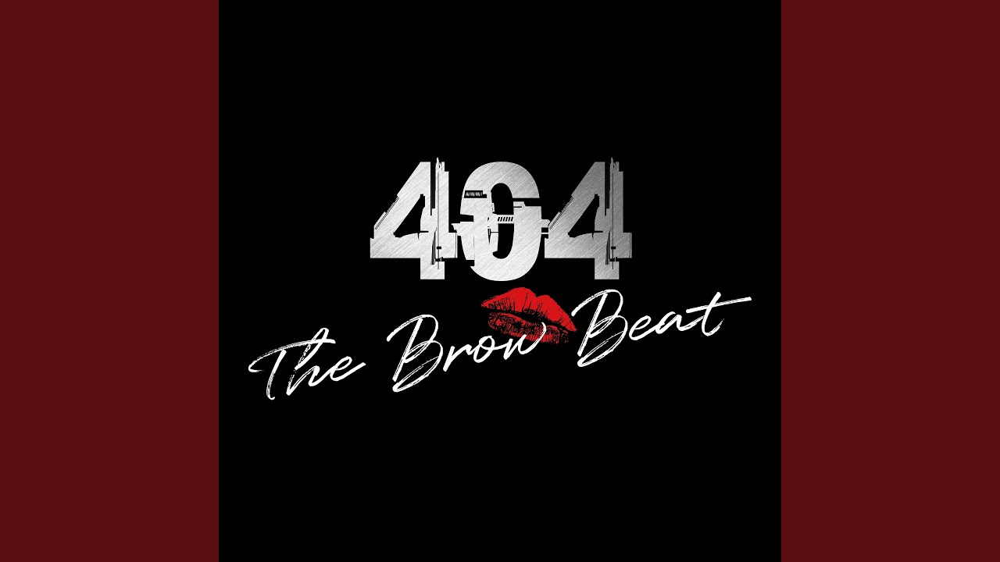
The Brow Beat — ネモフィラ
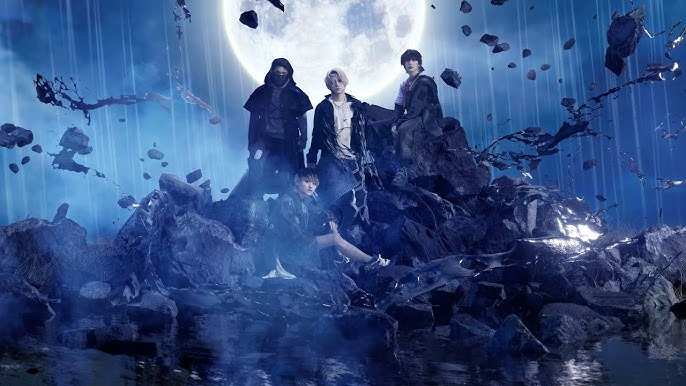
ZIPANG OPERA — Like a Wolf
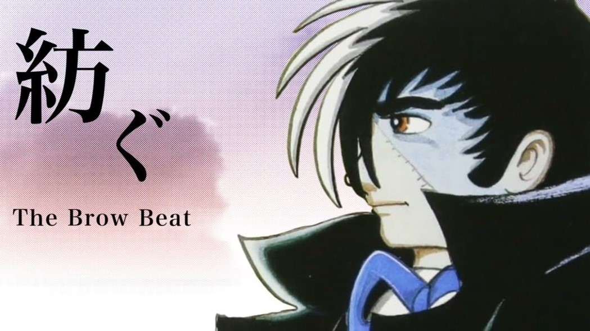
The Brow Beat — 紡ぐ
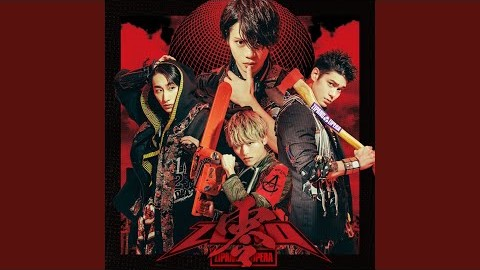
ZIPANG OPERA — Last Quarter
韻マン
" 誰にもできない韻が踏みたい そんな考えが初めりだった "
— Keep Going!
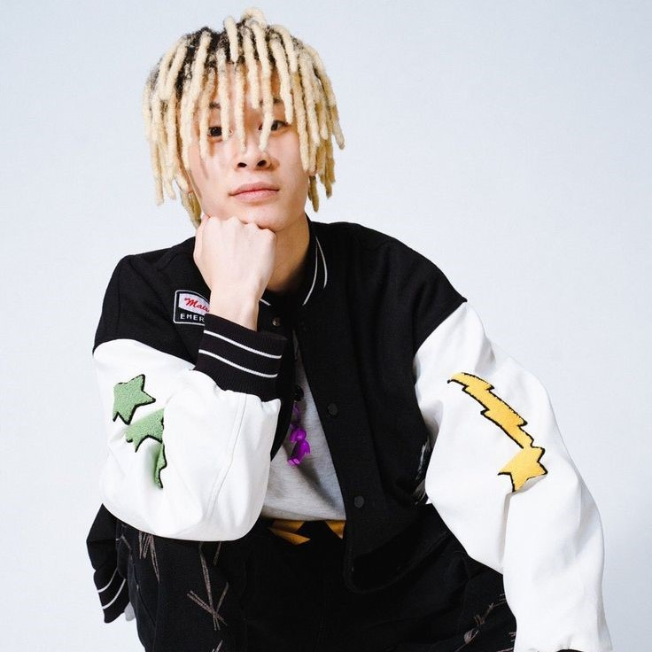
Inman (Rapper)
- 音樂類型: 嘻哈 / 饒舌
- 生日: 2001年 3月 12日
- 年齡: 23
- 出生地: 大阪府
- Instragram: @inmanrap
國中時受到朋友的影響開始饒舌，原本只是因為好玩而模仿GADORO的韻，但漸漸的想要擁有自己的歌曲。 成為高中生後開始四處與其他MC對決，並研發出獨特的押韻技術。 雖然只著重於押韻的饒舌方式在對決中不太有利，不過仍在第15屆高中RAP錦標賽中晉級4強，在第16屆高中RAP錦標賽上也進入前8名，因此被稱作「韻的天才」。 由於對押韻的執著與熱愛，而把藝名取作「韻マン」，意思是押韻人。 2020年4月12日發行了第1首歌曲《Change My Life》，6個月內播放了700萬次，同年11月7日發行第2首單曲《hometown》。
入坑曲
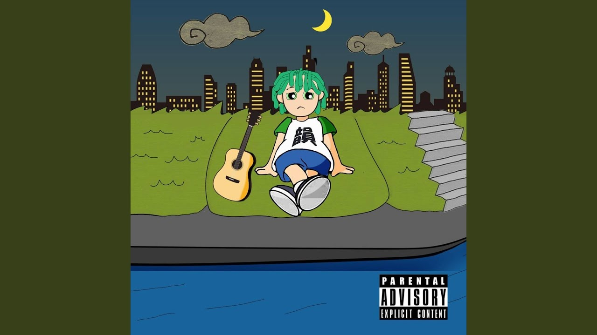
韻マン — hometown
推薦的歌
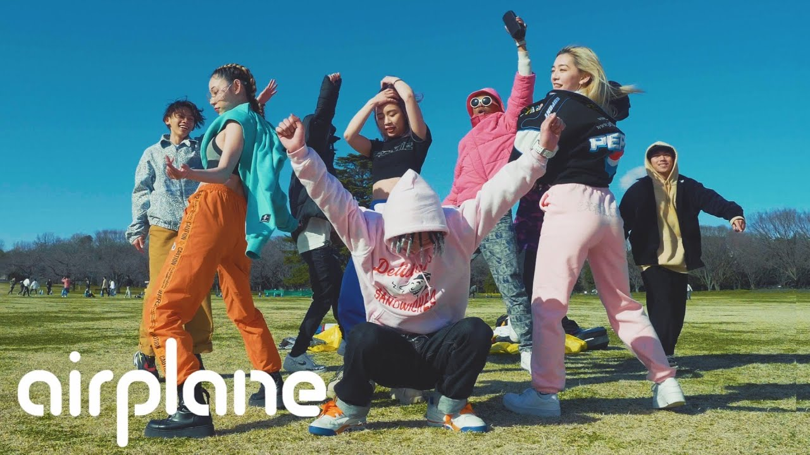
韻マン — Change My Life
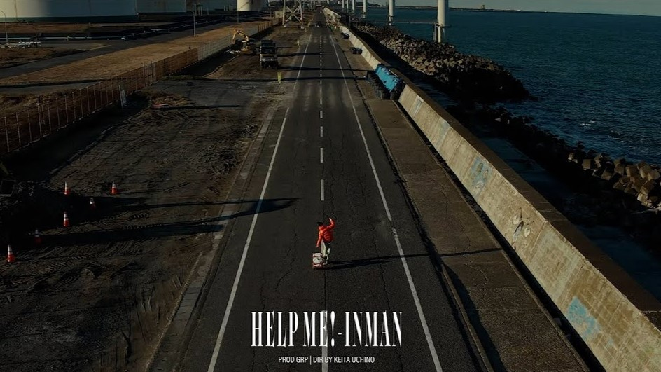
韻マン — HELP ME!!!
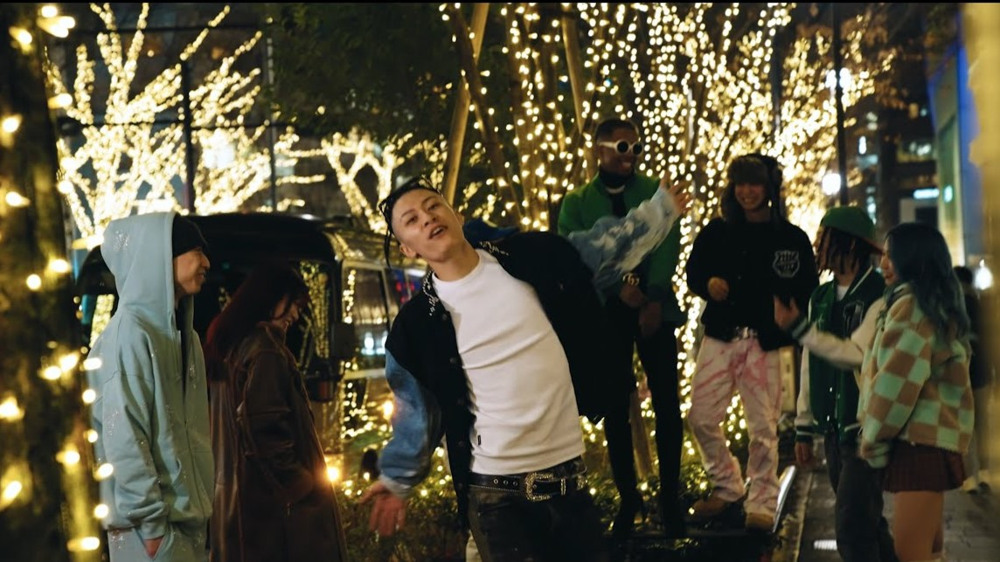
韻マン — Keep Going!
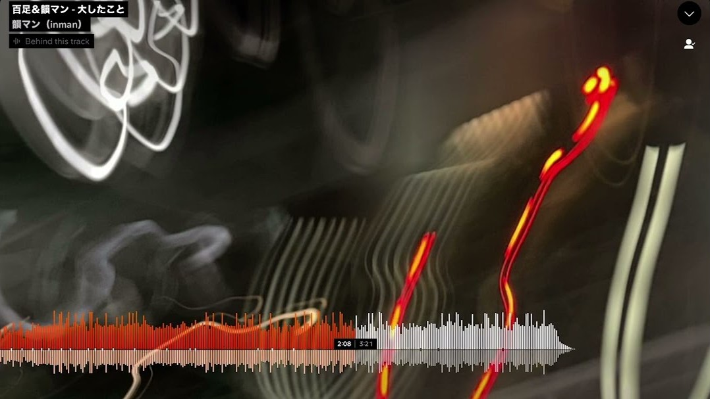
百足 & 韻マン — 大したこと
百足
" こんな自分のために歌う これからも歌えるように "
— まわりみち
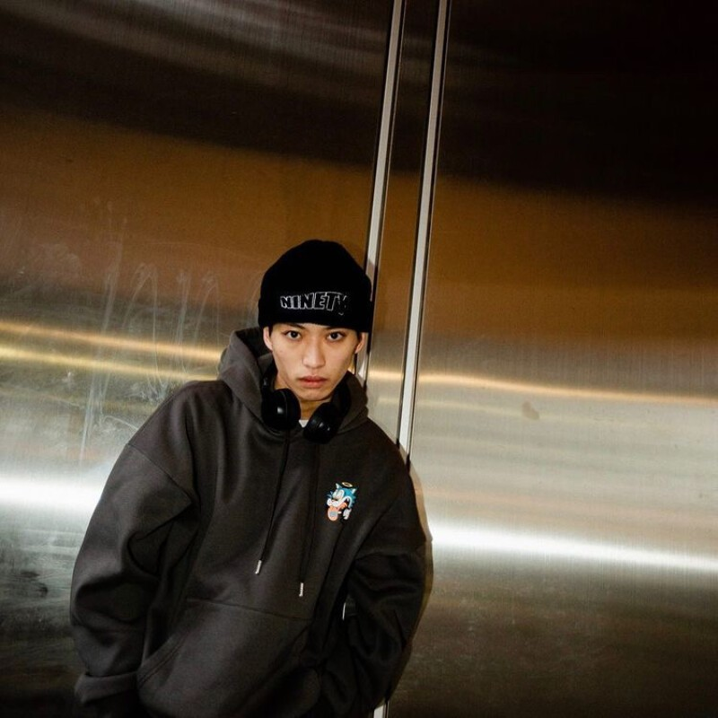
Mukade (Rapper)
- 音樂類型: 嘻哈 / 饒舌
- 生日: 2000年 2月 12日
- 年齡: 24
- 出生地: 東京都
- Instragram: @mukade_0212
因為身邊有喜歡MC對決的朋友，後來又在游泳比賽中陷入低谷而迷戀起Cypher，至此開始了饒舌之路。 由於想專注在饒舌上，於是從高中輟學。 在2019年4月3日首次參加第15屆BAZOOKA!!!高中RAP錦標賽，擊敗韻マン，此後聲名鵲起，被譽為「00世代最強」。 藝名「百足」為日文中蜈蚣的意思，家鄉許多MC的藝名都是以昆蟲來命名，聽起來非常帥，而蜈蚣很噁心，容易讓人記住，日文漢字也比較簡單。 2023年2月19日發行與韻マン的合作歌曲《君のまま》在網路上大受歡迎，是2023年Billboard JAPAN排行榜累計播放量破億的第3首歌曲。
入坑曲
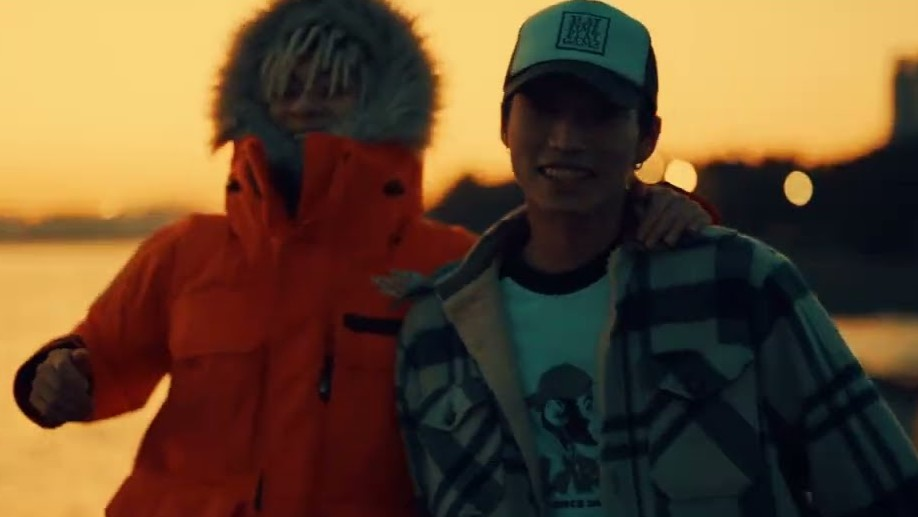
百足 & 韻マン — 君のまま
推薦的歌
Kvi Baba
" マイク通し吐く息 すると僕は少し僕は笑えたんだ "
— Talk to Myself
Kvi Baba (Rapper)
- 音樂類型: 嘻哈 / 情緒饒舌
- 生日: 1999年 8月 7日
- 年齡: 25
- 出生地: 大阪府
- Instragram: @kvibaba
高中時和朋友一起去台上試著饒舌後，發現自己有這方面的才能。 高中畢業後開始音樂活動，雖然音樂生涯並不是一帆風順，但把這些不好的想法昇華成了激勵人心的歌詞，抱持著「為了自己與和自己相似的人這樣就好」的信念在創作歌曲。 即使本身不是強大的人，也想讓聽眾聽完後能稍微獲得一點力量，傳達出「你不是一個人」的訊息。 藝名「Kvi Baba」中的「Kvi」和本名有關，「Baba」則是鬼牌的意思，而鬼牌在撲克牌中是獨一無二的存在。 2024年8月7日發行與G-k.i.d、KEIJU的合作歌曲《Friends, Family & God》，在Apple Music「TOP 100：日本」中獲得第16名。
入坑曲
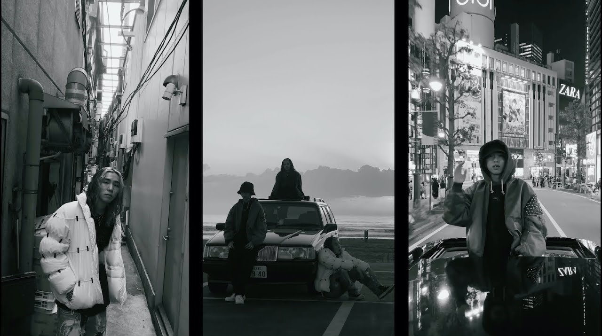
Kvi Baba（feat.vividboooy）— Tired But Fine（Remix）
推薦的歌
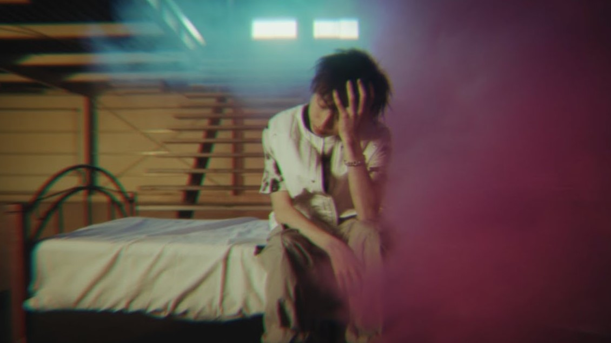
Kvi Baba — Tear Wave
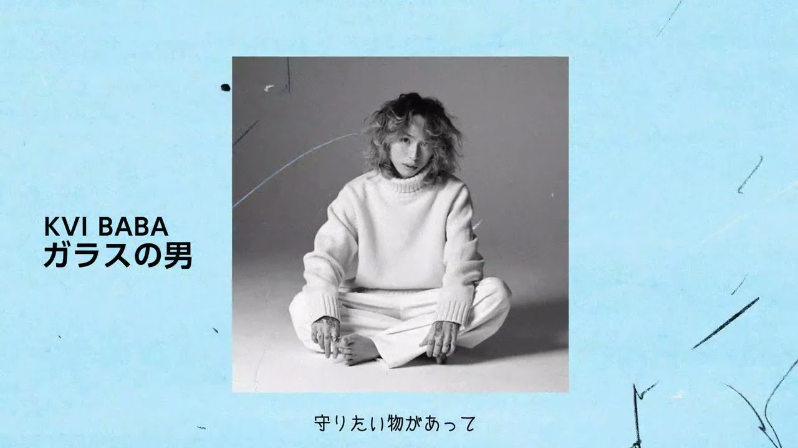
Kvi Baba — ガラスの男
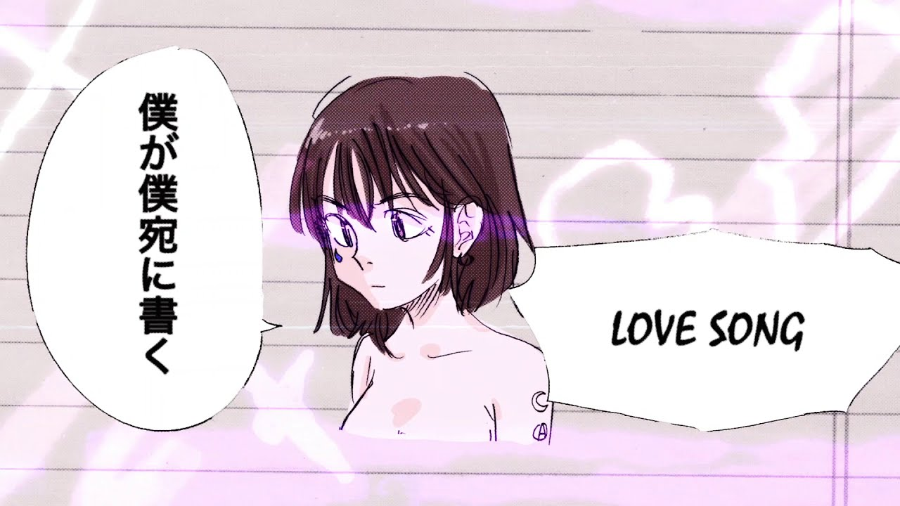
Kvi Baba — Fight Song
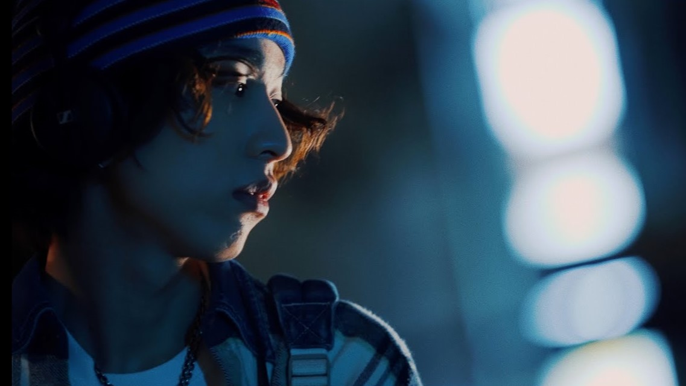
Kvi Baba — Fool in the Moon